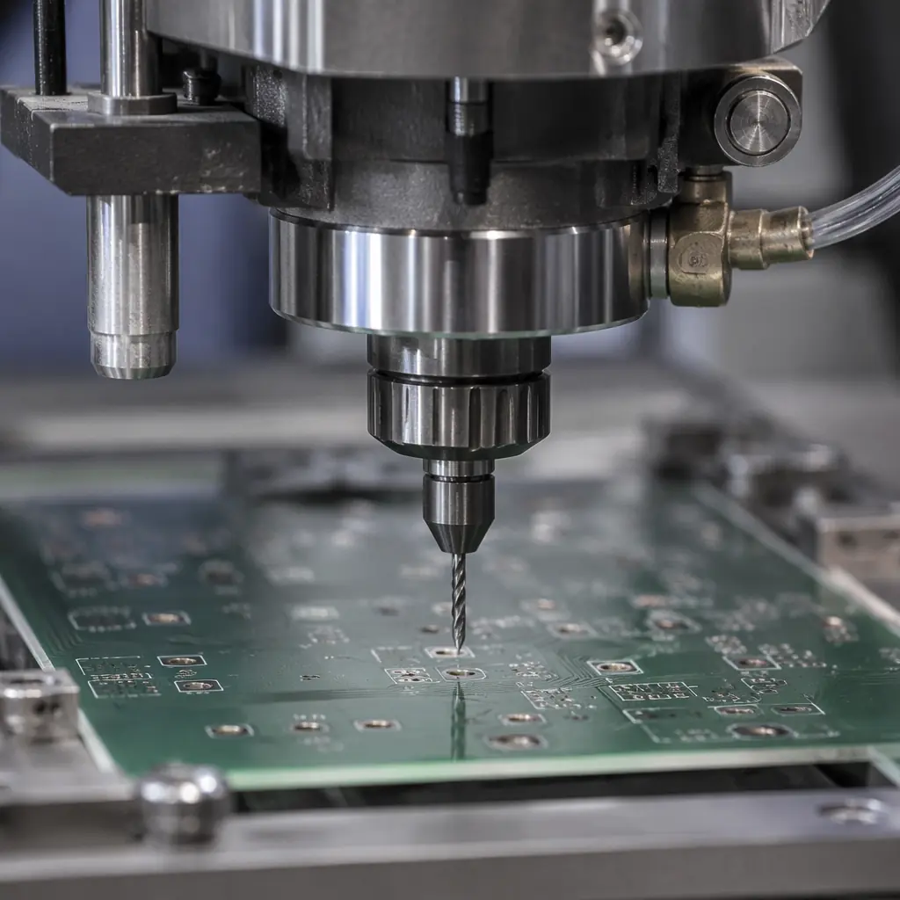
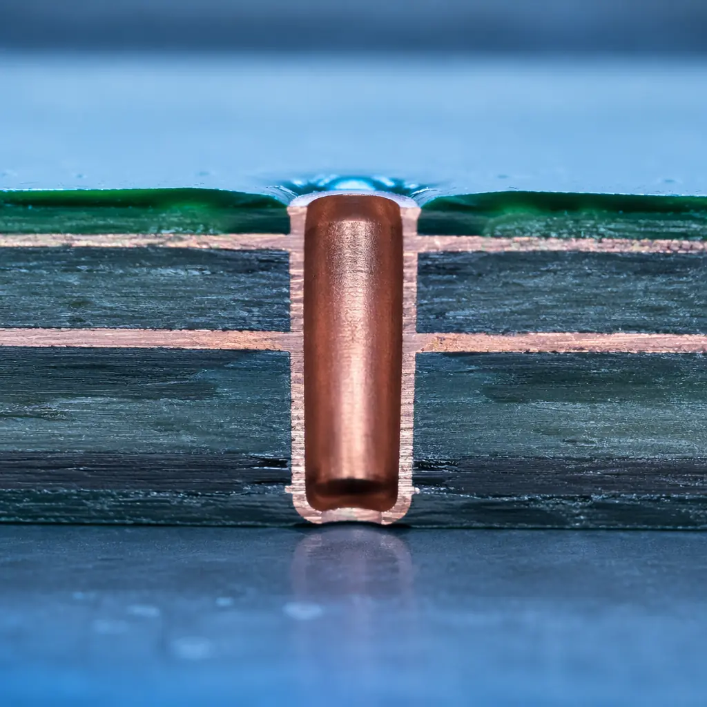
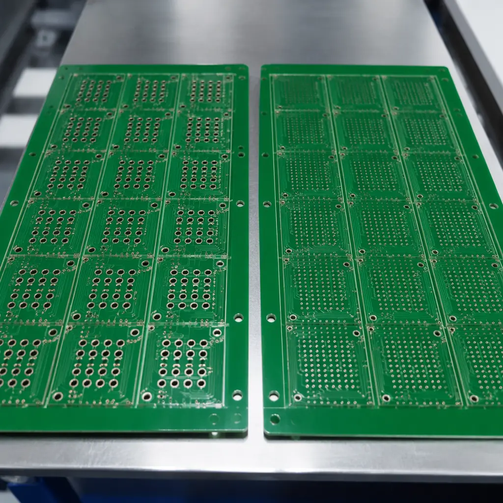

The drill file you send to your PCB fabricator contains a simple list of X-Y coordinates and tool sizes. But whether those holes are formed by a mechanical drill bit spinning at 200,000 RPM or a CO2 laser ablating copper one pulse at a time determines your board's layer count, minimum trace width, and cost per panel. On a 10-layer smartphone main board with 8,000 laser vias, the drilling step alone accounts for 18–25% of total fabrication cost. Here's how to specify the right technology — and avoid paying for microvias where a mechanical drill works fine.
At Huaxing PCBA, our Shenzhen facility runs 12 mechanical drilling spindles alongside dedicated CO2 and UV laser drilling stations, giving us the flexibility to match the process to the design — not the other way around. Here's what every PCB designer and procurement engineer should know before checking the "laser drill" box on their fabrication drawing.

Mechanical Drilling: The Workhorse for Through-Holes Above 0.15 mm
Mechanical drilling uses solid tungsten carbide bits rotating at 160,000–300,000 RPM to physically cut through the entire PCB stack-up in a single pass. It's been the standard since the 1960s and remains the only option for through-hole vias, component lead holes, and any hole deeper than 0.3 mm.
What Mechanical Drilling Does Well
Through-Holes in a Single Pass: 0.15 mm to 6.35 mm Diameter
A mechanical bit drills all layers — copper, laminate, and prepreg — in one continuous motion at 2–3 meters per second feed rate. This makes it fundamentally faster than laser for any hole that goes through the entire board. The practical minimum is 0.15 mm (6 mil) with advanced spindles; below that, the bit's aspect ratio (length/diameter) exceeds 15:1 and bit breakage becomes economically unacceptable. For deeper boards (≥ 2.4 mm total thickness), the minimum increases to 0.25 mm.
Lowest Cost Per Hole at Scale: $0.0002–0.0008 per Hole
Once you amortize the drill bit (500–3,000 hits per bit for standard FR-4), mechanical drilling costs $0.0002–0.0008 per hole at 50,000+ panel volumes. This is 5–10x cheaper than laser. The cost comes from the bit itself ($2–15 per bit depending on diameter), spindle time, and tool change downtime. Our PCB cost drivers guide breaks down the full manufacturing cost stack.
Works on All Materials: FR-4, Polyimide, PTFE, Ceramic-Filled
Mechanical bits don't care about the material's laser absorption spectrum. For PTFE-based RF laminates (which are nearly transparent to CO2 lasers) or ceramic-filled hydrocarbon materials (which require extremely high UV fluence), mechanical drilling is often the only practical option. Our RF PCB manufacturing guide covers material-specific drilling parameters.
Limitations That Push You Toward Laser
| Limitation | Mechanical Limit | When Laser Takes Over |
|---|---|---|
| Min hole diameter | 0.15 mm (6 mil) | Below 0.15 mm → laser mandatory |
| Max aspect ratio | 12:1 (bit length/dia) | AR > 10:1 and hole < 0.2 mm → laser |
| Min land diameter | Hole + 0.25 mm annular ring | Land = hole + 0.15 mm → laser |
| Blind/buried vias | Requires sequential lamination | Laser can stop on inner copper layer |
| Positional accuracy | ±25 µm (advanced) | ±10 µm (laser, with fiducial alignment) |
| Hole wall roughness | 10–25 µm Ra (smeared) | 2–5 µm Ra (cleaner for plating) |
| Stacked vias (via-in-pad) | Impossible | Laser + copper fill → standard HDI |
Design Rule: If your smallest hole ≥ 0.2 mm and goes through the entire board, use mechanical drilling. You'll save 30–50% on the drilling step at mid-volume (5,000 panels) with no quality trade-off. If any hole is < 0.15 mm, blind (doesn't go through the full stack), or stacked on a pad, you need laser — there's no mechanical alternative.
Laser Drilling: CO2 vs UV for Microvias and HDI
Laser drilling uses focused light energy to ablate (vaporize) material one pulse at a time. Unlike mechanical drilling, a laser can stop precisely at an inner-layer copper pad — this is the fundamental capability that enables blind vias, buried vias, and the HDI stackups found in every modern smartphone, tablet, and automotive ADAS module.

CO2 Laser (9.4–10.6 µm wavelength)
How It Works: Ablates Dielectric, Stops at Copper
CO2 laser energy is strongly absorbed by FR-4 epoxy/glass but reflected by copper (> 98% at 10.6 µm). This makes CO2 the default choice for drilling through the outer dielectric layer to reach an inner copper pad — the laser self-terminates when it hits copper, creating a clean microvia floor ready for direct metallization. Via diameters range from 50 µm to 150 µm, with a maximum dielectric thickness of ~100 µm per pass.
Cost: $0.001–0.003 per Via at Volume
CO2 laser drilling costs roughly 3–5x more than mechanical on a per-hole basis, but the via count is typically much lower (hundreds to low thousands per panel vs tens of thousands of mechanical holes). At 50,000 panels, a board with 2,000 CO2 microvias adds $100–300 to the total fabrication cost — significant but manageable. Our HDI PCB technology guide covers the complete cost model for HDI stackups.
Process Limitation: Copper Pre-Treatment Required
CO2 cannot ablate the outer copper foil — the beam reflects off it. Before laser drilling, the fabricator must chemically etch a "conformal mask" window in the outer copper at each via location, exposing the dielectric underneath. This adds a photolithography step that increases total drilling cycle time by ~20%. For boards with very dense via patterns, this pre-treatment cost can exceed the laser drilling cost itself.
UV Laser (355 nm wavelength — Nd:YAG, frequency-tripled)
How It Works: Ablates Both Copper and Dielectric
At 355 nm, the photon energy (3.5 eV) exceeds the bond energy of most PCB materials. UV lasers can drill through copper and dielectric in the same pass, enabling diameters as small as 20–25 µm. This is the technology behind "any-layer" HDI (ALIVH) and substrate-like PCBs (SLP) used in flagship smartphones. UV is the only option for drilling through copper directly without pre-treatment.
Cost: $0.005–0.015 per Via
UV laser is 5–10x more expensive per hole than CO2 due to slower ablation rate (~1/5 the speed of CO2) and higher equipment cost. It's only economically justified when via diameters are below 50 µm or when drilling through copper directly (eliminating the conformal mask step). For most HDI designs with 75–100 µm microvias, CO2 is the cost-effective choice.
Which Laser for Your Design? If your microvias are 75–150 µm in outer-layer dielectric → CO2. If < 50 µm or need to drill through copper → UV. At Huaxing PCBA, our laser drilling capability covers both types, and our CAM engineers review every drill file to flag designs where the specified laser type isn't optimal for the via geometry.
Cost Comparison: Real Numbers at Three Volume Levels
Here is the actual cost-per-hole comparison for a production PCB fabricator, based on a 450 × 600 mm panel with 2.0 mm total board thickness:
| Technology | Min Hole | 5,000 Panels | 50,000 Panels | 200,000 Panels |
|---|---|---|---|---|
| Mechanical (0.25 mm) | 0.15 mm | $0.003/hole | $0.0006/hole | $0.00025/hole |
| Mechanical (0.35 mm) | 0.20 mm | $0.002/hole | $0.0004/hole | $0.00015/hole |
| CO2 Laser (100 µm via) | 0.05 mm | $0.008/via | $0.002/via | $0.001/via |
| UV Laser (40 µm via) | 0.02 mm | $0.025/via | $0.008/via | $0.004/via |
Note: Costs include consumables (bits, laser gas, mask materials), machine amortization, and operator labor. Does not include the conformal mask photo-step for CO2, which adds ~$0.0003/via at volume.
For a typical 8-layer smartphone HDI board with 3,000 CO2 microvias and 8,000 mechanical through-holes at 50,000-panel volume:
- Mechanical: 8,000 × $0.0006 = $4.80/panel
- CO2 Laser: 3,000 × $0.002 = $6.00/panel
- Total drilling cost: $10.80/panel ≈ 12% of total fab cost ($90/panel)
Backdrilling: Where Mechanical Meets Precision
Backdrilling is a specialized mechanical operation that removes the unused portion of a plated through-hole stub that acts as an antenna at high frequencies. While the initial through-hole is mechanically drilled, backdrilling requires a larger-diameter bit to counterbore the stub from the back side of the board with controlled depth — typically to within 100–150 µm of the inner-layer pad without breaking through it.
Backdrill Oversize: Nominal Hole + 0.15 mm Minimum
The backdrill bit must be larger than the plated hole to avoid damaging the via barrel plating. At a minimum: backdrill diameter = finished hole size + 0.15 mm. For a 0.25 mm via, the backdrill is 0.40 mm. This enlarges the annular ring requirement on the back side of the board — not a problem if designed in from the start, but a common oversight in first-time high-speed designs.
Depth Tolerance: ±75 µm at Production Volume
The backdrill must stop before the inner-layer pad but close enough that the remaining stub is electrically negligible. Modern CNC drilling machines with capacitive height sensing achieve ±75 µm depth tolerance. Our PCB backdrilling guide covers how to specify backdrill depth, stub length targets, and the cost adder (typically $0.50–2.00 per panel for the additional drill pass).
Design Rules: What to Put on Your Fabrication Drawing

When you send your PCB design to fabrication, the drill drawing should explicitly state these parameters rather than leaving them to the fabricator's default interpretation:
Specify "Laser Drill" or "Mechanical" Per Hole Type in the Drill Table
Don't assume the fabricator will choose the right technology based on hole size. Mark microvias, blind vias, and buried vias explicitly as "LASER" in the drill table. Through-holes ≥ 0.2 mm = "MECHANICAL." Holes 0.15–0.2 mm = "MECHANICAL (advanced spindle required)." Refer to our PCB via technology guide for the full via type taxonomy.
State Annular Ring Requirements for Laser Vias
IPC-6012 Class 2 requires a 50 µm minimum annular ring for laser microvias (measured at the target pad). Class 3 tightens this to 75 µm. For stacked microvias (via-in-pad with copper fill), specify "stacked via structure — no annular ring breakout allowed" and expect the fabricator to use a 100% AOI check on the via-to-pad alignment. Our IPC Class 2 vs Class 3 guide covers the full quality grade differences.
If Using CO2 Laser, Note the Copper Conformal Mask Step
The fabricator's CAM engineer needs to know whether to generate the conformal mask artwork from your outer-layer copper data or whether you want them to optimize the mask openings for laser alignment tolerance. For dense via fields (pitch < 0.5 mm), let the fabricator set mask opening sizes — their process experience with alignment tolerance beats a generic rule. See our stackup design guide for layer-to-layer registration tolerances.
Call Out Via Fill Requirements: Plugged, Capped, or Copper-Filled
Laser microvias in via-in-pad applications must be copper-filled and planarized to support SMT component placement. Mechanical through-holes can be epoxy-plugged and capped (IPC-4761 Type VI) for via-in-pad use but with lower reliability than copper-filled laser vias. Our PCB via fill types guide covers every IPC-4761 type with application recommendations.
At Huaxing PCBA, we process drill files through a CAM review that checks every hole against our 12-spindle mechanical + CO2 + UV laser capability matrix before releasing to production. If your design calls for UV laser where CO2 would work (or vice versa), we flag it with a cost-saving recommendation before cutting a single panel. Whether you're prototyping a 4-layer board with 500 mechanical holes or ramping a 10-layer smartphone HDI with 8,000 laser microvias, understanding the drilling technology behind your Gerber file is the difference between an optimized quote and a surprise cost adder. For more on the full fabrication process, see our PCB assembly process guide and DFM tips for cost reduction.